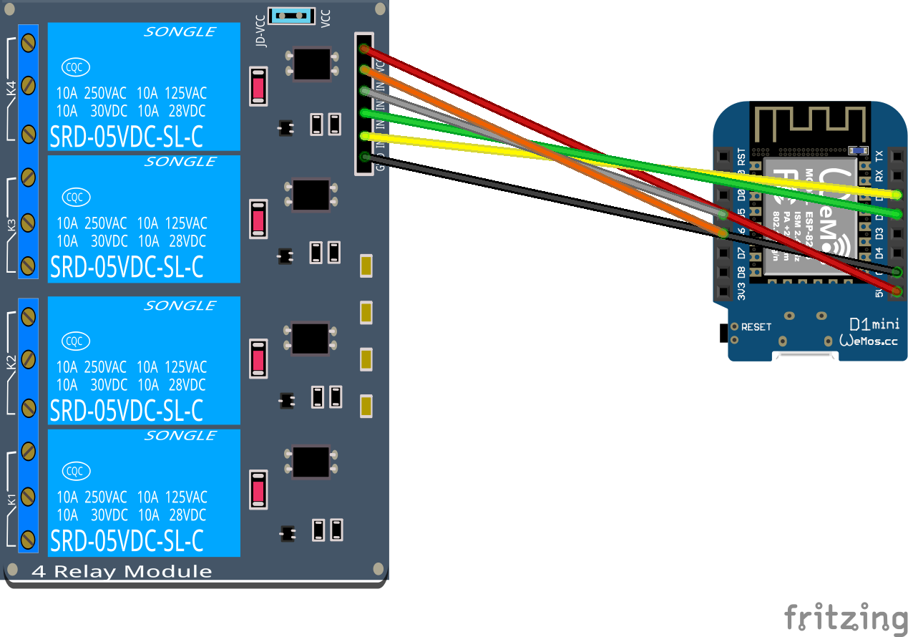
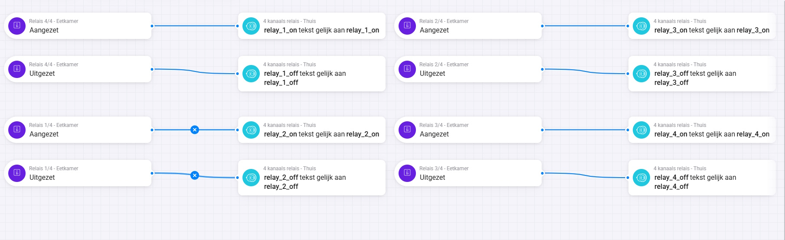
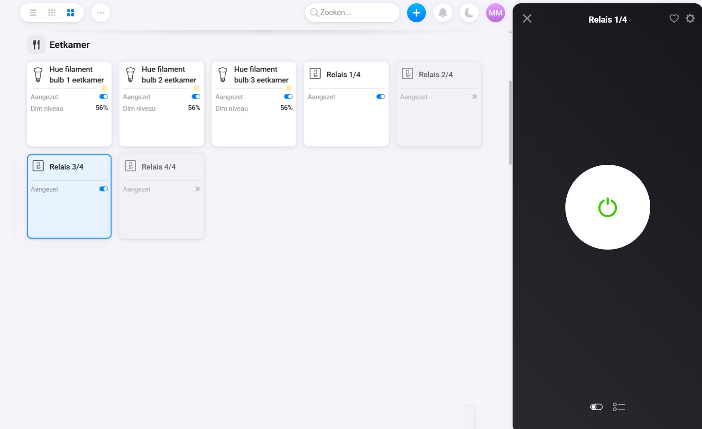
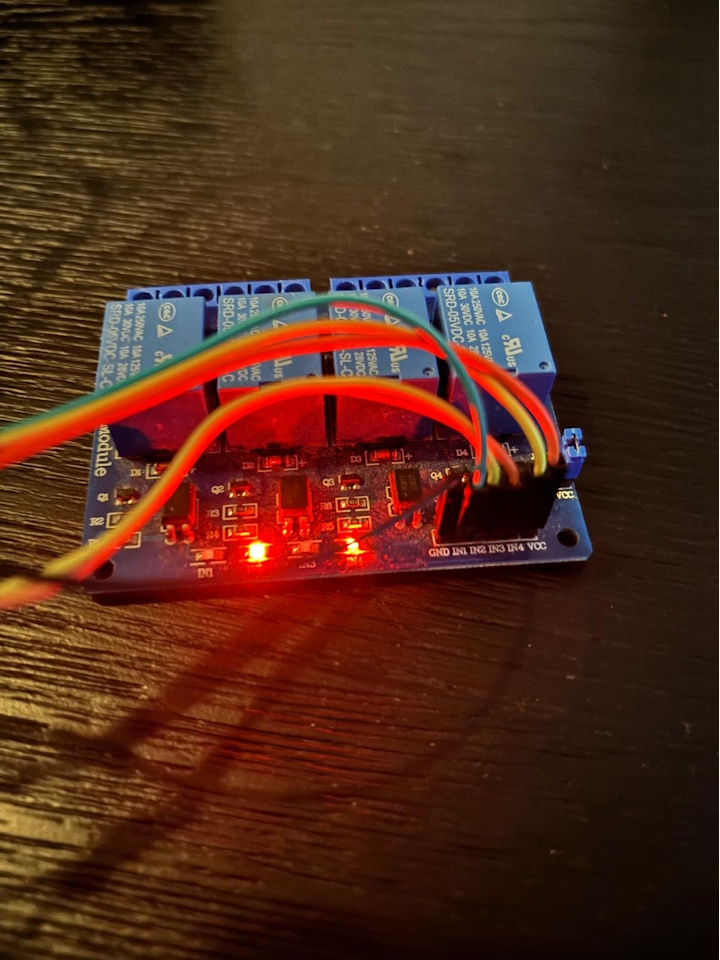

Veel slimme stekkers of relaismodules werken prima zolang je één apparaat wilt schakelen. Maar zodra je meerdere apparaten afzonderlijk wilt bedienen vanuit Homey, wordt het vaak duurder, beperkter of minder flexibel.
Met een Wemos D1 Mini en een eenvoudige 4-kanaals relaismodule bouw je relatief goedkoop een volledig lokaal schakelsysteem waarmee je vier relais afzonderlijk via Homey-flows kunt bedienen. In dit project gebruiken we Homeyduino zodat ieder relais een eigen flowactie krijgt binnen Homey.
Wat ga je bouwen?
Je bouwt een slimme 4-kanaals relaiscontroller die via Homey afzonderlijke relais kan schakelen.
- Vier afzonderlijke relais → Ieder relais kan apart aan- of uitgezet worden via Homey-flows.
- Lokale Homeyduino integratie → De communicatie verloopt rechtstreeks tussen Homey en de ESP8266.
Hiermee kun je bijvoorbeeld meerdere lampen, voedingen of andere apparaten centraal automatiseren zonder losse slimme stekkers te gebruiken.
Benodigdheden
- Wemos D1 Mini of vergelijkbare ESP8266
- 4-kanaals relaismodule
- Dupont jumper wires
- USB-kabel voor de Wemos D1 Mini
- Homey Pro met Homeyduino app
Handige links bij dit project
Dit zijn producten die aansluiten op de benodigdheden in dit artikel.
Stap-voor-stap uitleg
1. Relaismodule aansluiten
Sluit de relaismodule aan op de Wemos D1 Mini. In dit project gebruiken we vier afzonderlijke GPIO-pinnen zodat ieder relais individueel aangestuurd kan worden.
- Relais IN1 → D1
- Relais IN2 → D2
- Relais IN3 → D5
- Relais IN4 → D6
- VCC → 5V
- GND → GND

2. Homeyduino installeren
Installeer de Homeyduino bibliotheek in de Arduino IDE en zorg dat de Homeyduino app op je Homey geïnstalleerd is. Voeg daarna de juiste ESP8266 board support toe zodat de Wemos D1 Mini geprogrammeerd kan worden.
3. De code uploaden
Upload onderstaande code naar de Wemos D1 Mini. De code maakt vier afzonderlijke Homey-flowacties aan waarmee je ieder relais apart kunt schakelen.
#include
#include
#include
// ========================================================
// Debug instellingen
// ========================================================
#define DEBUG 1
#if DEBUG
#define DBG_PRINT(x) Serial.print(x)
#define DBG_PRINTLN(x) Serial.println(x)
#else
#define DBG_PRINT(x)
#define DBG_PRINTLN(x)
#endif
// ========================================================
// Centrale configuratie
// ========================================================
namespace Config {
// ======================================================
// WiFi
// ======================================================
constexpr const char* WIFI_SSID = "SSID";
constexpr const char* WIFI_PASSWORD = "PASSWORD";
constexpr unsigned long WIFI_CONNECT_TIMEOUT_MS = 15000;
constexpr unsigned long WIFI_CHECK_INTERVAL_MS = 30000;
// ======================================================
// Homey
// ======================================================
constexpr const char* HOMEY_NAME = "4 kanaals relais";
constexpr const char* HOMEY_CLASS = "socket";
constexpr unsigned long HOMEY_HEARTBEAT_INTERVAL_MS = 60000;
// ======================================================
// Relais
// ======================================================
constexpr uint8_t RELAY_COUNT = 4;
constexpr uint8_t RELAY_PINS[RELAY_COUNT] = {
D1, // Relais 1 - GPIO5
D2, // Relais 2 - GPIO4
D5, // Relais 3 - GPIO14
D6 // Relais 4 - GPIO12
};
// Veel relaisboards zijn active LOW
constexpr bool RELAY_ACTIVE_LOW = true;
}
// ========================================================
// Applicatiestatus
// ========================================================
namespace AppState {
bool relayState[Config::RELAY_COUNT] = {
false,
false,
false,
false
};
bool masterState = false;
unsigned long lastWifiCheckMs = 0;
unsigned long lastHomeyHeartbeatMs = 0;
}
// ========================================================
// RelayService
// ========================================================
namespace RelayService {
uint8_t outputLevel(bool on) {
if (Config::RELAY_ACTIVE_LOW) {
return on ? LOW : HIGH;
}
return on ? HIGH : LOW;
}
bool isValidRelay(uint8_t index) {
return index < Config::RELAY_COUNT;
}
bool anyRelayEnabled() {
for (uint8_t i = 0; i < Config::RELAY_COUNT; i++) {
if (AppState::relayState[i]) {
return true;
}
}
return false;
}
void updateMasterState(bool notifyHomey = true) {
AppState::masterState = anyRelayEnabled();
if (notifyHomey) {
Homey.setCapabilityValue("onoff", AppState::masterState);
}
}
void apply(uint8_t index, bool on, bool notifyHomey = true) {
if (!isValidRelay(index)) {
return;
}
AppState::relayState[index] = on;
digitalWrite(
Config::RELAY_PINS[index],
outputLevel(on)
);
updateMasterState(notifyHomey);
DBG_PRINT("Relais ");
DBG_PRINT(index + 1);
DBG_PRINT(" = ");
DBG_PRINTLN(on ? "AAN" : "UIT");
}
void applyAll(bool on, bool notifyHomey = true) {
for (uint8_t i = 0; i < Config::RELAY_COUNT; i++) {
AppState::relayState[i] = on;
digitalWrite(
Config::RELAY_PINS[i],
outputLevel(on)
);
}
AppState::masterState = on;
if (notifyHomey) {
Homey.setCapabilityValue("onoff", on);
}
DBG_PRINTLN(on ? "Alle relais AAN" : "Alle relais UIT");
}
void begin() {
for (uint8_t i = 0; i < Config::RELAY_COUNT; i++) {
pinMode(Config::RELAY_PINS[i], OUTPUT);
digitalWrite(
Config::RELAY_PINS[i],
outputLevel(false)
);
AppState::relayState[i] = false;
}
AppState::masterState = false;
DBG_PRINTLN("Relais geïnitialiseerd.");
}
}
// ========================================================
// WifiService
// ========================================================
namespace WifiService {
bool connectWithTimeout() {
if (WiFi.status() == WL_CONNECTED) {
return true;
}
DBG_PRINT("Verbinden met WiFi: ");
DBG_PRINTLN(Config::WIFI_SSID);
WiFi.mode(WIFI_STA);
WiFi.begin(
Config::WIFI_SSID,
Config::WIFI_PASSWORD
);
const unsigned long startedAt = millis();
while (
WiFi.status() != WL_CONNECTED &&
millis() - startedAt < Config::WIFI_CONNECT_TIMEOUT_MS
) {
delay(500);
DBG_PRINT(".");
}
DBG_PRINTLN("");
if (WiFi.status() == WL_CONNECTED) {
DBG_PRINT("WiFi verbonden. IP-adres: ");
DBG_PRINTLN(WiFi.localIP());
return true;
}
DBG_PRINTLN("WiFi verbinden mislukt.");
return false;
}
void maintain() {
const unsigned long now = millis();
if (
now - AppState::lastWifiCheckMs <
Config::WIFI_CHECK_INTERVAL_MS
) {
return;
}
AppState::lastWifiCheckMs = now;
if (WiFi.status() == WL_CONNECTED) {
return;
}
DBG_PRINTLN("WiFi kwijt. Opnieuw verbinden...");
connectWithTimeout();
}
}
// ========================================================
// Homey callbacks
// ========================================================
// --------------------
// Hoofdschakelaar
// --------------------
void setMasterState() {
const bool requestedState =
Homey.value.toInt() == 1;
RelayService::applyAll(
requestedState,
true
);
}
void getMasterState() {
Homey.returnResult(AppState::masterState);
}
// --------------------
// Relais 1
// --------------------
void setRelay1On() {
RelayService::apply(0, true, true);
}
void setRelay1Off() {
RelayService::apply(0, false, true);
}
void getRelay1State() {
Homey.returnResult(AppState::relayState[0]);
}
// --------------------
// Relais 2
// --------------------
void setRelay2On() {
RelayService::apply(1, true, true);
}
void setRelay2Off() {
RelayService::apply(1, false, true);
}
void getRelay2State() {
Homey.returnResult(AppState::relayState[1]);
}
// --------------------
// Relais 3
// --------------------
void setRelay3On() {
RelayService::apply(2, true, true);
}
void setRelay3Off() {
RelayService::apply(2, false, true);
}
void getRelay3State() {
Homey.returnResult(AppState::relayState[2]);
}
// --------------------
// Relais 4
// --------------------
void setRelay4On() {
RelayService::apply(3, true, true);
}
void setRelay4Off() {
RelayService::apply(3, false, true);
}
void getRelay4State() {
Homey.returnResult(AppState::relayState[3]);
}
// ========================================================
// HomeyService
// ========================================================
namespace HomeyService {
void begin() {
Homey.begin(Config::HOMEY_NAME);
Homey.setClass(Config::HOMEY_CLASS);
// ====================================================
// Hoofdschakelaar
// ====================================================
Homey.addCapability(
"onoff",
setMasterState
);
Homey.addCondition(
"state",
getMasterState
);
// ====================================================
// Relais Flow-acties
// ====================================================
Homey.addAction(
"relay_1_on",
setRelay1On
);
Homey.addAction(
"relay_1_off",
setRelay1Off
);
Homey.addAction(
"relay_2_on",
setRelay2On
);
Homey.addAction(
"relay_2_off",
setRelay2Off
);
Homey.addAction(
"relay_3_on",
setRelay3On
);
Homey.addAction(
"relay_3_off",
setRelay3Off
);
Homey.addAction(
"relay_4_on",
setRelay4On
);
Homey.addAction(
"relay_4_off",
setRelay4Off
);
// ====================================================
// Relais condities
// ====================================================
Homey.addCondition(
"relay_1_state",
getRelay1State
);
Homey.addCondition(
"relay_2_state",
getRelay2State
);
Homey.addCondition(
"relay_3_state",
getRelay3State
);
Homey.addCondition(
"relay_4_state",
getRelay4State
);
Homey.setCapabilityValue(
"onoff",
AppState::masterState
);
DBG_PRINT("Homey gestart als: ");
DBG_PRINTLN(Config::HOMEY_NAME);
}
void heartbeat() {
const unsigned long now = millis();
if (
now - AppState::lastHomeyHeartbeatMs <
Config::HOMEY_HEARTBEAT_INTERVAL_MS
) {
return;
}
AppState::lastHomeyHeartbeatMs = now;
Homey.setCapabilityValue(
"onoff",
AppState::masterState
);
DBG_PRINTLN("Homey heartbeat verzonden.");
}
}
// ========================================================
// Setup
// ========================================================
void setup() {
#if DEBUG
Serial.begin(115200);
delay(250);
#endif
DBG_PRINTLN("");
DBG_PRINTLN("Start Homeyduino 4-kanaals relais...");
RelayService::begin();
WifiService::connectWithTimeout();
HomeyService::begin();
DBG_PRINTLN("Setup gereed.");
}
// ========================================================
// Loop
// ========================================================
void loop() {
WifiService::maintain();
Homey.loop();
HomeyService::heartbeat();
}
4. Het apparaat koppelen aan Homey
Zodra de ESP8266 verbinding heeft gemaakt met WiFi verschijnt het apparaat in Homeyduino. Voeg het apparaat toe aan Homey zodat de flowacties beschikbaar worden.
5. Flows maken voor afzonderlijke relais
Installeer in Homey eerst de Virtuele Apparaten app. Voeg daarna per relais een virtueel apparaat toe, bijvoorbeeld een virtuele schakelaar. In dit voorbeeld gebruiken we vier afzonderlijke schakelaars zoals ‘Relais 1/4’, ‘Relais 2/4’ enzovoort. Deze virtuele schakelaars gebruik je vervolgens als bediening binnen Homey.
Maak daarna flows aan waarbij het aan- of uitzetten van een virtuele schakelaar de juiste Homeyduino actie aanroept. Ieder relais krijgt zijn eigen actie zoals relay_1_on, relay_1_off of relay_3_on. Op die manier kun je ieder relais afzonderlijk bedienen alsof het een normaal slim apparaat in Homey is.

Integratie met Homey
De relaismodule verschijnt in Homey als één apparaat met een hoofdschakelaar. Daarnaast kun je via flowacties ieder relais afzonderlijk bedienen. Hierdoor combineer je de flexibiliteit van Homey-flows met goedkope en uitbreidbare ESP8266-hardware.
Praktische toepassingen zijn bijvoorbeeld:
- Afzonderlijke verlichting schakelen in verschillende ruimtes
- Ventilatie of afzuiging automatisch inschakelen
- Meerdere apparaten slim automatiseren vanuit één compacte module

Praktisch gebruik
Een groot voordeel van deze aanpak is dat je relatief eenvoudig meerdere schakelingen kunt centraliseren. In plaats van vier losse slimme stekkers gebruik je één compacte ESP8266-oplossing die volledig lokaal werkt. Zeker bij technische ruimtes, hobbyprojecten of maatwerkautomatiseringen biedt dat veel flexibiliteit.

Aandachtspunten
- Veel relaismodules zijn active LOW, waardoor de logica omgekeerd werkt.
- Gebruik geschikte voeding en wees voorzichtig bij het schakelen van netspanning.
- Controleer altijd welke GPIO-pinnen geschikt zijn voor jouw ESP8266-board.
Conclusie
Met een Wemos D1 Mini, Homeyduino en een 4-kanaals relaismodule bouw je een verrassend krachtige lokale schakelmogelijkheid voor Homey. Dankzij de afzonderlijke flowacties kun je ieder relais individueel bedienen en eenvoudig integreren in bestaande automatiseringen. Daarmee is dit een praktisch en flexibel DIY-project voor iedereen die meer controle wil over zijn slimme huis.